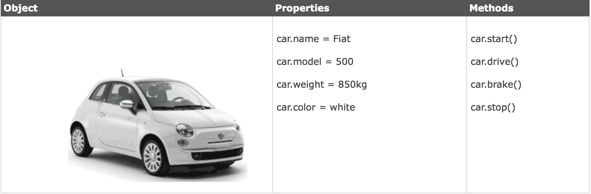

Javascript objects are just data with attached properties and methods. They are identical to Ruby class instances
Javascript properties are identical to Ruby attributes.You can set them and call them on a Javascript object
Javascript methods are identical to Ruby methods. You can call them on a Javascript object.
